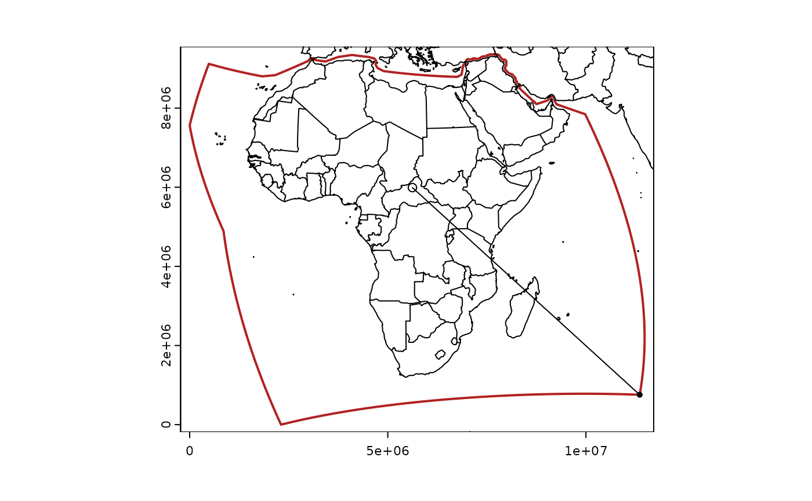
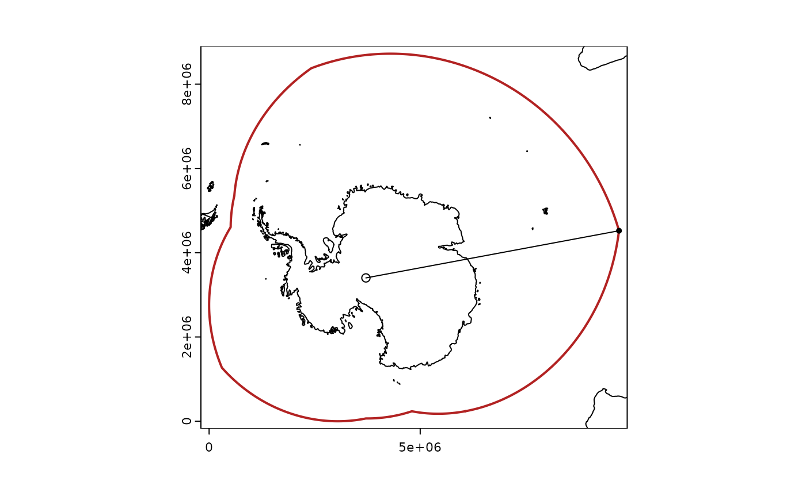
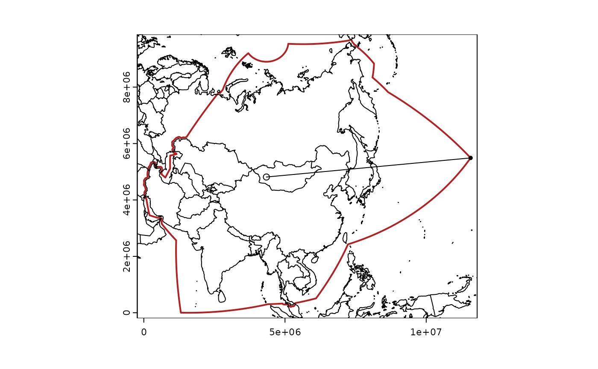
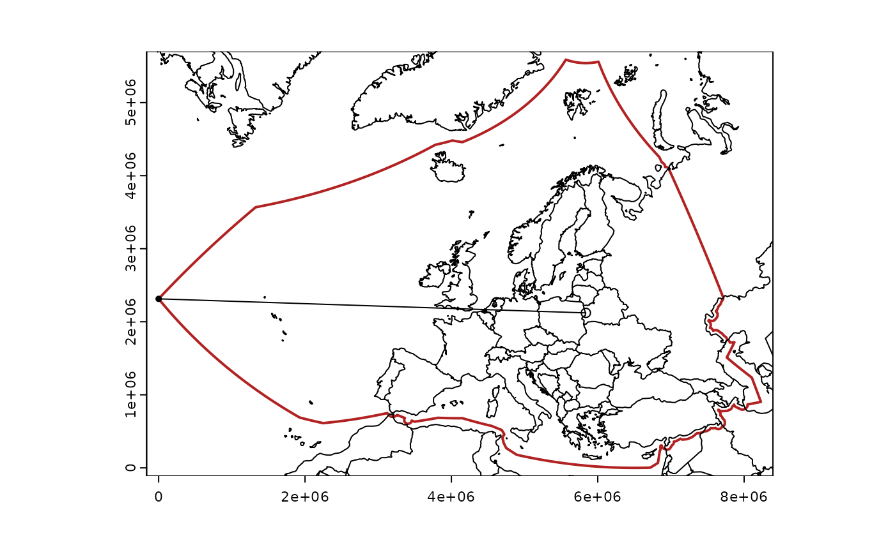
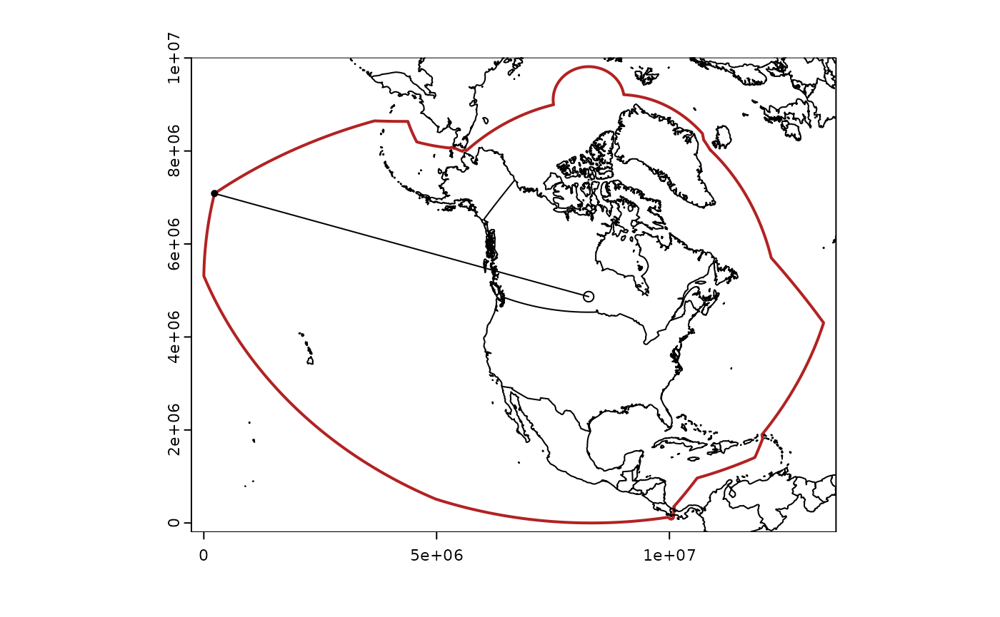
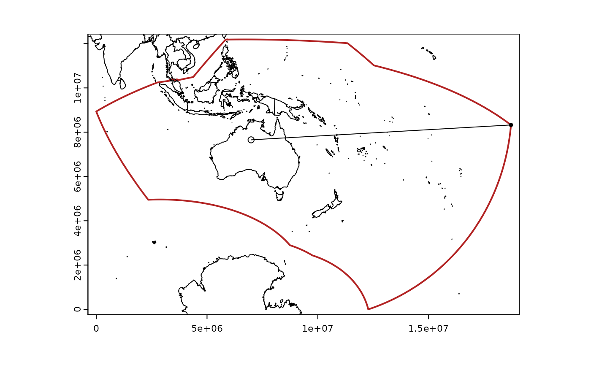
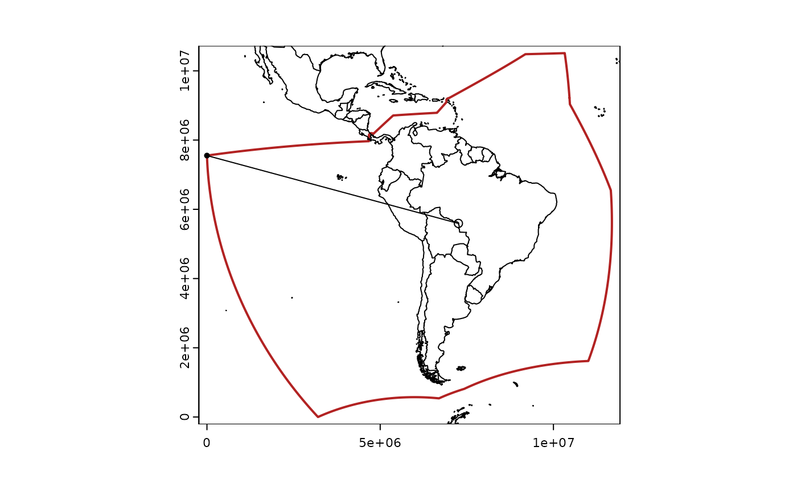

library(equi7grid)
dsn <- "/vsicurl/https://github.com/mdsumner/equi7grid/raw/main/data-raw/equi7grid.gpkg"
library(terra)
#> terra 1.7.71
layers <- vector_layers(dsn)
## we're just parsing a projstring to get param numbers
get_tok <- function(projstring, tok) {
strsplit(strsplit(projstring, sprintf("+%s=", tok))[[1]][2], " ")[[1]][1]
}
d <- numeric(7)
idx <- integer(7)
for (i in 1:7) {
v <- vect(dsn, layers[i])
projstring <- crs(v, proj = TRUE)
pt <- matrix(as.numeric(c(get_tok(projstring, "lon_0"),
get_tok(projstring, "lat_0"))),
ncol = 2)
dists <- distance(as.points(v), project(vect(pt, crs = "EPSG:4326"), crs(v)))[,1]
d[i] <- max(dists)
idx[i] <- which.max(dists)
plot(v, border = "firebrick", lwd = 2)
points(project(pt, to = projstring, from = "EPSG:4326"))
points(as.points(v)[idx[i]])
m <- do.call(cbind, maps::map(plot = F)[1:2])
lines(project(m, to = crs(v), from = "EPSG:4326"))
ln <- rbind(project(pt, to = projstring, from = "EPSG:4326"),
geom(as.points(v)[idx[i]])[, c("x", "y"), drop = FALSE])
lines(ln)
print(sprintf("max distance from centre point to boundary: %im", round(d[i])))
print(sprintf(" (in angular units) %i", as.integer(round(d[i]/111120))))
}
#> Warning: [project] 1972 failed transformations
#> [1] "max distance from centre point to boundary: 7766091m"
#> [1] " (in angular units) 70"
#> Warning: [project] 1972 failed transformations
#> [1] "max distance from centre point to boundary: 6098342m"
#> [1] " (in angular units) 55"
#> Warning: [project] 1972 failed transformations
#> [1] "max distance from centre point to boundary: 7262605m"
#> [1] " (in angular units) 65"
#> Warning: [project] 1972 failed transformations
#> [1] "max distance from centre point to boundary: 5840453m"
#> [1] " (in angular units) 53"
#> Warning: [project] 1972 failed transformations
#> [1] "max distance from centre point to boundary: 8335385m"
#> [1] " (in angular units) 75"
#> Warning: [project] 1972 failed transformations
#> [1] "max distance from centre point to boundary: 11748746m"
#> [1] " (in angular units) 106"
#> Warning: [project] 1972 failed transformations
#> [1] "max distance from centre point to boundary: 7517295m"
#> [1] " (in angular units) 68"